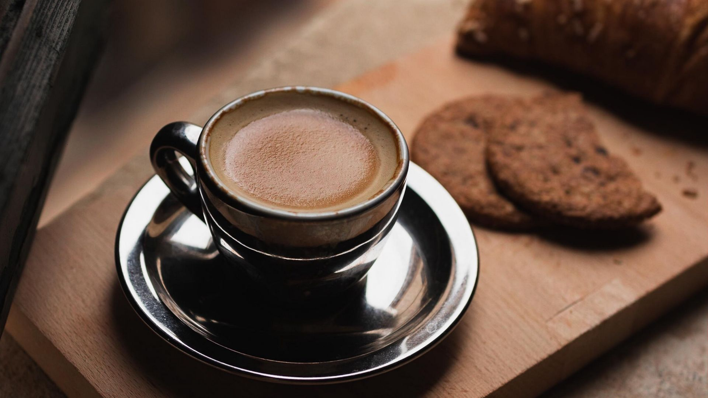
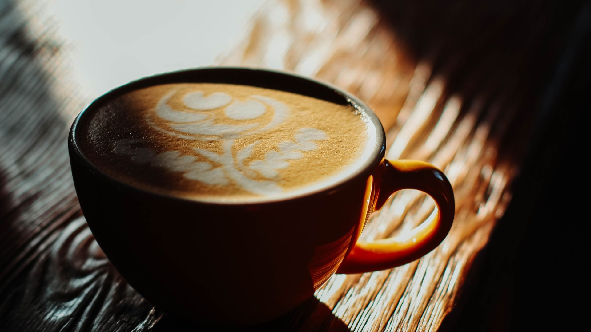
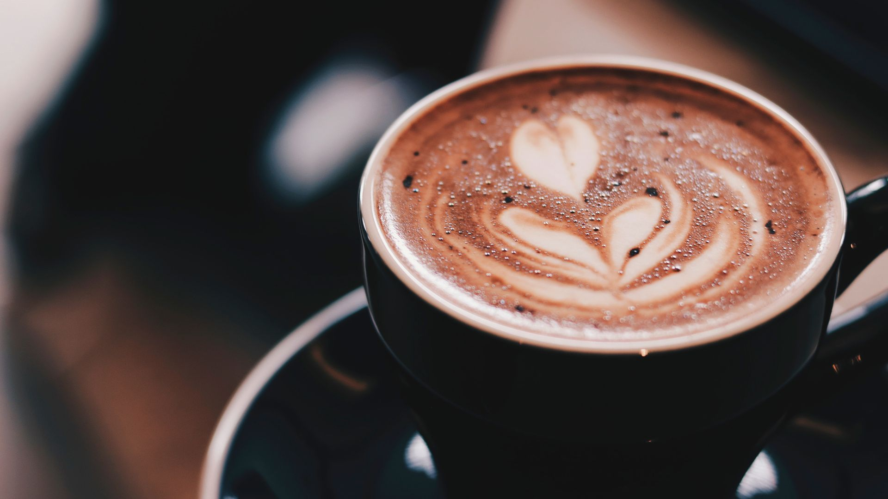

Pictures Of Coffee





Coffee is a brewed drink prepared from roasted coffee beans, the seeds of berries from certain Coffea species. When coffee berries turn from green to bright red in color – indicating ripeness – they are picked, processed, and dried. Dried coffee seeds are roasted to varying degrees, depending on the desired flavor
A beverage as black as ink, useful against numerous illnesses, particularly those of the stomach. Its consumers take it in the morning, quite frankly, in a porcelain cup that is passed around and from which each one drinks a cupful. It is composed of water and the fruit from a bush called bunnu.
We believe that coffee is more than just a drink: It’s a culture, an economy, an art, a science — and a passion. Whether you're new to the brew or an espresso expert, there's always more to learn about this beloved beverage.
We were in a small village in a scenic – if touristy – part of Italy called Cinque Terre. There were no grand hotels but an enterprising inn-keeper had converted an old monastery into a bed-and-breakfast. Each morning we would go down to the kitchen, where, on a large wooden table, would be laid out a delicious breakfast – bread, salami, torta della nonna and other Italian cakes – along with a jug of juice.